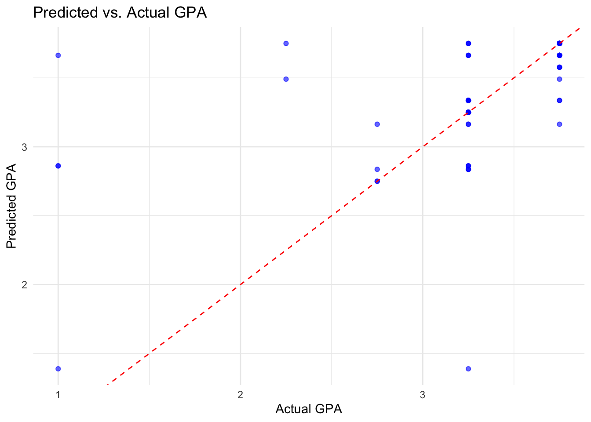

Rows: 101 Columns: 11
── Column specification ────────────────────────────────────────────────────────
Delimiter: ","
chr (10): Timestamp, Choose your gender, What is your course?, Your current ...
dbl (1): Age
ℹ Use `spec()` to retrieve the full column specification for this data.
ℹ Specify the column types or set `show_col_types = FALSE` to quiet this message.
Code
head(MH)
# A tibble: 6 × 11
Timestamp `Choose your gender` Age `What is your course?`
<chr> <chr> <dbl> <chr>
1 8/7/2020 12:02 Female 18 Engineering
2 8/7/2020 12:04 Male 21 Islamic education
3 8/7/2020 12:05 Male 19 BIT
4 8/7/2020 12:06 Female 22 Laws
5 8/7/2020 12:13 Male 23 Mathemathics
6 8/7/2020 12:31 Male 19 Engineering
# ℹ 7 more variables: `Your current year of Study` <chr>,
# `What is your CGPA?` <chr>, `Marital status` <chr>,
# `Do you have Depression?` <chr>, `Do you have Anxiety?` <chr>,
# `Do you have Panic attack?` <chr>,
# `Did you seek any specialist for a treatment?` <chr>
Code
MH_clean <- MH %>%mutate(Gender =as.factor(`Choose your gender`),Course =as.factor(`What is your course?`),Year =as.factor(`Your current year of Study`),CGPA =as.factor(`What is your CGPA?`), Marital_Status =as.factor(`Marital status`),Depression =as.factor(`Do you have Depression?`),Anxiety =as.factor(`Do you have Anxiety?`), Panic_Attacks =as.factor(`Do you have Panic attack?`),Specialist_Treatment =as.factor(`Did you seek any specialist for a treatment?`) ) %>%select(-Timestamp)
parsnip model object
Call:
kknn::train.kknn(formula = ..y ~ ., data = data, ks = min_rows(2, data, 5))
Type of response variable: continuous
minimal mean absolute error: 0.3436319
Minimal mean squared error: 0.3553906
Best kernel: optimal
Best k: 2
ggplot(predictions2, aes(x = CGPA, y = .pred)) +geom_point(alpha =0.6, color ="blue") +geom_abline(intercept =0, slope =1, linetype ="dashed", color ="red") +labs(title ="Predicted vs. Actual GPA",x ="Actual GPA",y ="Predicted GPA" ) +theme_minimal()

Alcohol Dataset
Code
P_alc <-read_csv(here::here("student-por.csv"))
Rows: 649 Columns: 33
── Column specification ────────────────────────────────────────────────────────
Delimiter: ","
chr (17): school, sex, address, famsize, Pstatus, Mjob, Fjob, reason, guardi...
dbl (16): age, Medu, Fedu, traveltime, studytime, failures, famrel, freetime...
ℹ Use `spec()` to retrieve the full column specification for this data.
ℹ Specify the column types or set `show_col_types = FALSE` to quiet this message.
Code
head(P_alc)
# A tibble: 6 × 33
school sex age address famsize Pstatus Medu Fedu Mjob Fjob reason
<chr> <chr> <dbl> <chr> <chr> <chr> <dbl> <dbl> <chr> <chr> <chr>
1 GP F 18 U GT3 A 4 4 at_home teacher course
2 GP F 17 U GT3 T 1 1 at_home other course
3 GP F 15 U LE3 T 1 1 at_home other other
4 GP F 15 U GT3 T 4 2 health servic… home
5 GP F 16 U GT3 T 3 3 other other home
6 GP M 16 U LE3 T 4 3 services other reput…
# ℹ 22 more variables: guardian <chr>, traveltime <dbl>, studytime <dbl>,
# failures <dbl>, schoolsup <chr>, famsup <chr>, paid <chr>,
# activities <chr>, nursery <chr>, higher <chr>, internet <chr>,
# romantic <chr>, famrel <dbl>, freetime <dbl>, goout <dbl>, Dalc <dbl>,
# Walc <dbl>, health <dbl>, absences <dbl>, G1 <dbl>, G2 <dbl>, G3 <dbl>
parsnip model object
Call:
kknn::train.kknn(formula = ..y ~ ., data = data, ks = min_rows(79, data, 5))
Type of response variable: continuous
minimal mean absolute error: 2.12142
Minimal mean squared error: 8.338198
Best kernel: optimal
Best k: 79